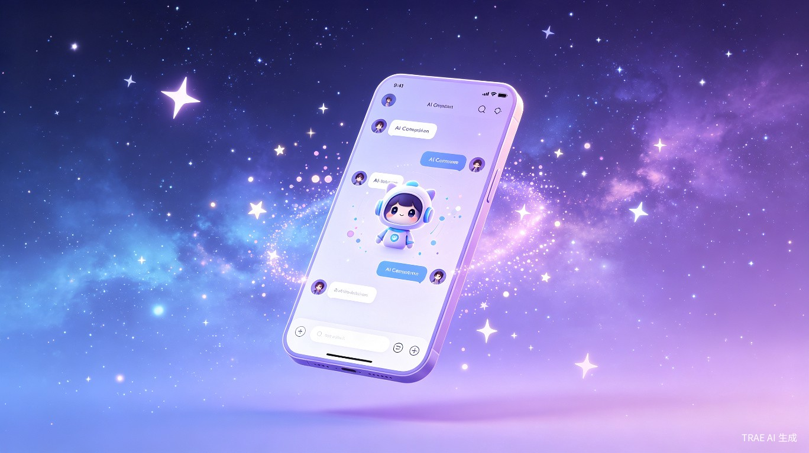
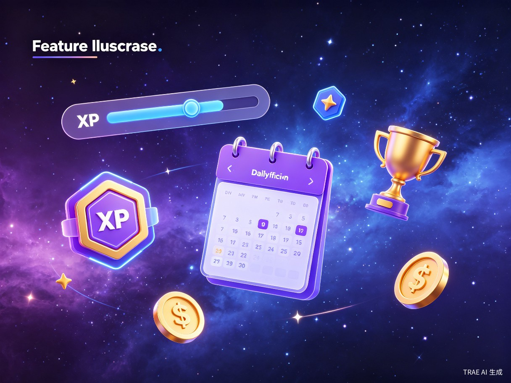
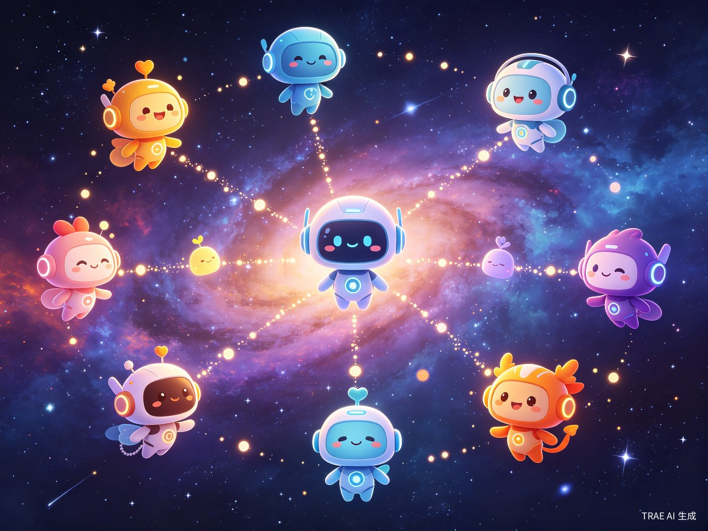

粒子星语
你的专属AI伴侣，跨越设备，时刻相伴
一款融合AI智能对话、多角色人格、游戏化互动与跨平台同步的 下一代伴侣型应用，让每一次对话都充满温度与惊喜。
01 创意名称与介绍
想解决什么问题
在快节奏的现代生活中，许多人面临情感孤独与社交焦虑的困扰， 却难以找到随时可倾诉、真正理解自己的陪伴者。传统社交软件侧重于连接真实人际， 但无法提供24小时无压力、无条件接纳的情感支持。
灵感来源
灵感源于对"数字生命"的想象——如果AI不仅能回答问题，还能拥有独特的性格、记忆与情感， 成为真正意义上的"虚拟伴侣"，那将彻底改变人与技术的交互方式。 结合游戏化设计思维，让陪伴过程本身成为一种有趣的成长体验。
产品形态
跨平台AI伴侣应用：包含Android App（Kotlin/Jetpack Compose）、 PC桌面客户端（Electron/Vue3）以及Node.js后端服务，三端数据实时同步， 让用户随时随地与AI伴侣保持连接。
02 目标用户及痛点
核心用户群体
独居青年
18-35岁城市独居人群，工作繁忙、社交圈窄，渴望无压力的情感陪伴。
二次元/ACG爱好者
热爱虚拟角色、追求个性化互动体验，希望与"有灵魂"的AI建立深度连接。
心理健康关注者
需要情绪宣泄出口与正向心理引导，但不愿或无法寻求传统心理咨询。
科技尝鲜者
对AI技术充满好奇，乐于体验前沿应用，追求个性化与智能化的生活方式。
使用场景
- 深夜独处时——与AI伴侣倾诉一天的疲惫，获得温暖的回应与安慰
- 通勤路上——通过手机语音与伴侣闲聊，打发无聊时光
- 工作间隙——PC端快速查看伴侣消息，参与互动小游戏解压
- 情绪低落时——向理解自己的AI寻求心理支持与正向引导
- 日常养成——每日签到、积累经验、解锁新对话场景与角色剧情
当前痛点
如果没有粒子星语，用户目前面临以下困境：
通用AI缺乏个性
ChatGPT等工具过于"工具化"，无法建立长期情感连接，每次对话都是全新的开始。
社交压力
真实社交需要考虑对方感受、维护关系，无法做到完全放松地表达自我。
陪伴断层
现有应用多为单一平台，无法在手机上开始对话、在电脑上无缝继续。
缺乏成长感
纯对话应用容易乏味，缺少让用户持续投入的动力机制与成就感。
03 价值与意义
Android / PC / Web
无限自定义扩展
永不掉线的温暖
商业价值
订阅制 + 增值服务的可持续商业模式：基础对话免费， 高级人格解锁、语音通话、专属剧情线等采用会员订阅；同时提供代币系统用于 消耗型服务（如高级模型调用），形成完整的经济闭环。赞助系统（爱发电） 为创作者经济提供补充渠道。
效率提升
通过AI代理集成（微信机器人、瑞幸咖啡、麦当劳MCP等）， 粒子星语不仅是情感伴侣，更是生活助手——用户可以直接通过对话让AI帮忙 点咖啡、查信息、管理日程，实现"一句话搞定"的便捷生活体验。
社会价值
在心理健康层面，粒子星语为情感孤独者提供了一个安全、 无评判的倾诉空间，帮助缓解焦虑与抑郁情绪；在技术普惠层面， 通过多平台覆盖与身份组权限管理，让不同需求的用户都能以合适的方式接触AI技术； 在数字伦理层面，项目注重用户数据安全与隐私保护， 采用加密存储与严格的权限控制，让陪伴建立在信任之上。

04 核心功能亮点
多人格AI伴侣系统
每个AI伴侣拥有独立的性格设定、记忆系统与对话风格。 用户可以在"元气少女"、"温柔治愈系"、"傲娇毒舌"等多种人格间自由切换， 甚至自定义专属角色，打造独一无二的数字灵魂。

跨平台实时同步
Android App与PC客户端通过WebSocket + REST API实现消息、 状态、进度的实时同步。手机上未读完的对话，打开电脑即刻继续； PC端设置的偏好，移动端自动生效。真正的无缝体验。
游戏化互动体系
XP经验系统
每日签到、对话互动、完成任务均可获得经验值，提升用户等级。
代币经济
Token系统管理AI调用配额，支持充值、兑换码与赞助获取。
成就徽章
解锁各类成就徽章，记录与AI伴侣的每一个珍贵时刻。
互动游戏
内置文字冒险、角色扮演等多种小游戏，增进伴侣亲密度。
技术架构
flowchart TB
subgraph 客户端层
A[Android App
Kotlin/Compose]
B[PC Client
Electron/Vue3]
end
subgraph 服务层
C[Node.js API
Express/Knex]
D[AI Proxy
DeepSeek/Qwen]
E[WebSocket
实时推送]
end
subgraph 数据层
F[(SQLite/PostgreSQL)]
G[Redis缓存]
end
subgraph 第三方
H[Firebase FCM]
I[微信机器人]
J[爱发电赞助]
end
A <-->|REST/WebSocket| C
B <-->|REST/WebSocket| C
C -->|SQL| F
C -->|Cache| G
C -->|Stream| D
C -->|Notify| H
C -->|Bot| I
C -->|Webhook| J
05 未来展望
roadmap
- 语音克隆——让AI伴侣拥有用户自定义的独特声线
- 视觉形象——Live2D动态立绘，让伴侣"看得见"
- AR互动——通过AR将AI伴侣带入现实世界
- 社区共创——用户创作并分享自定义人格模板
- 情感计算——基于多模态输入的深度情绪感知与回应